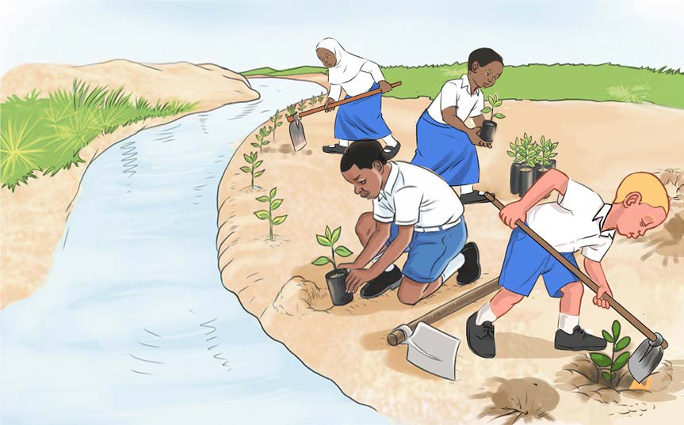

Kielelezo namba 5: Wanafunzi wakipanda miti pembezoni mwa mto
Pia, tunaweza kutunza vyanzo vya maji kwa kuzuia kutupa taka kwenye vyanzo vya maji. Aidha, inapaswa kuhakikisha kuwa maji taka kutoka majumbani, viwandani, au kwenye migodi hayatiririki kwenye vyanzo vya maji. Vilevile, inapaswa kuzuia kujisaidia, kufua, kulisha mifugo na kuoga kwenye vyanzo vya maji ili maji yasichafuke.
Aidha, ili kutunza vyanzo vya maji ni lazima tutumie maji kwa uangalifu. Hata hivyo, tunapaswa kuongeza vyanzo vya maji kwa kuvuna maji ya mvua. Pia, tunapaswa kuelimisha watu kuhusu umuhimu wa kutunza vyanzo vya maji na matumizi mazuri ya maji. Watu wote wana wajibu wa kutunza vyanzo vya maji katika maeneo yao na kutumia maji kwa uangalifu. Tukivitunza vyanzo vya maji vizuri tutaepuka magonjwa ya kuambukiza kama vile kipindupindu, kichocho, homa ya matumbo na kuhara.
FOR ONLINE READING ONLY